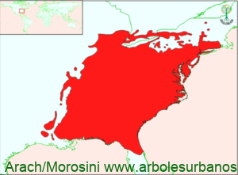

Click en las imágenes para ampliar

- NOMBRE CIENTÍFICO
- Liriodendron tulipifera
- FAMILIA BOTÁNICA
- Magnoliáceas
- ORIGEN
- Crece en es este de Estados Unidos, desde los grandes lagos en el límite con Canadá, hasta la península de la Florida
- DESCRIPCIÓN GENERAL
- es un árbol de gran porte en general entre 30 y 40 metros de altura, aunque hay ejemplares maduros de 55 metros y 2,5 metros de diámetro. Posee un tronco recto y una copa anchamente columnar. Corteza grisácea y lisa, luego agrietándose con la edad. Sus hojas son simples alternas, con dos lóbulos en el ápice y otros dos en la base, de 15 cm. o más, de color verde oscuro en la cara superior, verde claro o azulado en la cara inferior, ante de caer toman tonalidades amarillas.
- FLORES
- Las flores son hermafroditas de hasta 6 cm. de diámetro, de color verdecen franjas amarillas o anaranjadas, ubicadas en el extremos de los brotes, aparecen a mediados del verano.
- FRUTAS
- El fruto está compuesto por varias semillas, de hasta 5 cm. de largo de color marrón claro.
- USOS
- En su lugar de origen se utiliza su madera que es de color amarillento y de grano fino, se la emplea como madera estructural y mueblería y como madera laminada. También es una especie melífera. Es muy utilizada como ornamental, ya sea formando macizos o como ejemplar único, es recomendable para parques espaciosos debido a sus dimensiones.
- REPRODUCCIÓN
- lo más común es multiplicarlo por semillas, pero los ejemplares adultos son los que proveen semillas viables. Se recomienda estratificación a 4º durante 60 días cuidando que no pierdan su humedad, también se recomienda la siembra de otoño. La multiplicación por estacas es muy dificultosa.
- PARTICULARIDADES
- Sus semillas pueden conservar su viabilidad (mientras conserve su humedad) hasta 8 años